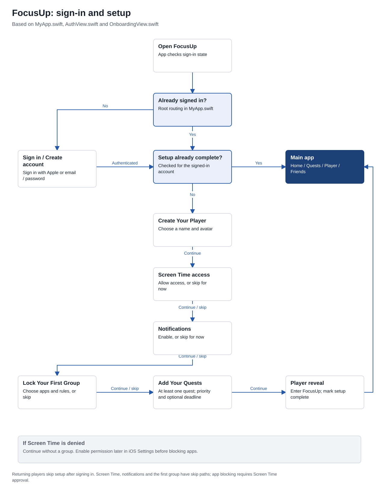
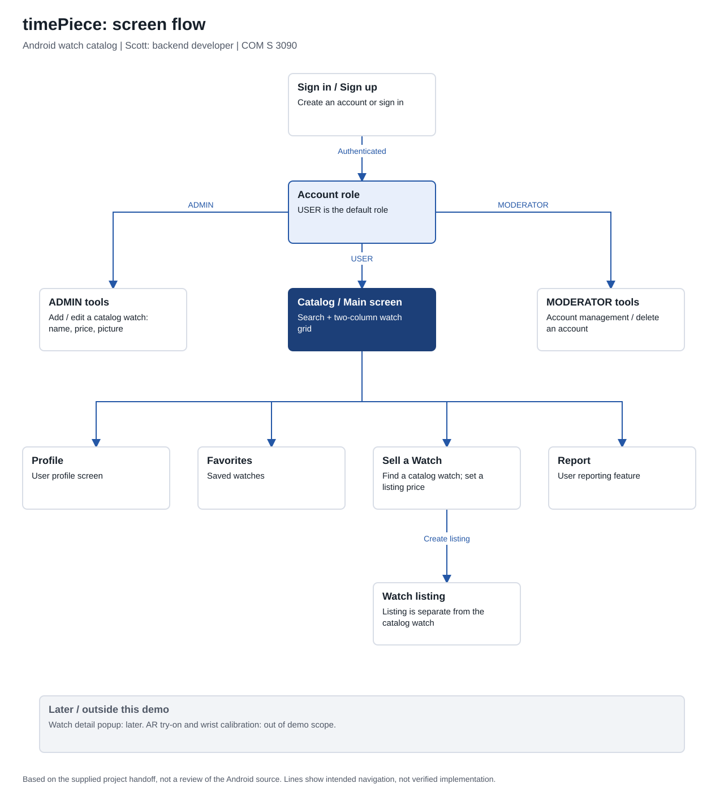

Project walkthroughs
App screen flows
Simple maps of the screens and the actions that connect them. Blue arrows show navigation; dark blue boxes highlight a main screen or result.
Open the .drawio file in diagrams.net to edit the boxes and arrows. On a small screen, scroll across a diagram or open its full-size image.
SwiftUI / iOS
FocusUp
These diagrams follow the current repository’s navigation: authentication and guided setup, then the four main tabs and quest check-in routes.
1. Sign-in and first-time setup
Returning players go straight to the main app after sign-in. First-time setup creates the player, requests permissions, sets up a group, and adds quests.
Open full-size setup diagram ↗
2. Main screens and everyday use
Home opens app groups; Quests opens task editing and Canvas; Player opens customization; Friends opens social features and the leaderboard. Check-in outcomes depend on the quest and group rule.
Open full-size main-screen diagram ↗
Source and scope
Drawn from MyApp.swift, ContentView.swift, AuthView.swift, OnboardingView.swift, HomeView.swift, TasksView.swift, GroupDetailView.swift, QuestDetailView.swift, CharacterView.swift, FriendsView.swift, and MostPressingQuestView.swift in the FocusUp repository.
This is a navigation overview of the source, not a claim that every device restriction or service integration has been tested. Timer, planner, and stats pictures in the project brief are early concepts; the current source uses quests and app groups.
Inspect the repository ↗Android / COM S 3090
timePiece
Sign-in leads to the watch catalog and role-specific tools. Users can reach Profile, Favorites, Sell, and Report. A listing references a catalog watch and has its own price.
Based on the project handoff. Exact navigation and role layouts still need comparison with the Android source. The watch-detail popup is a later feature; AR try-on and wrist calibration are outside the demo scope.
Open full-size timePiece flow ↗